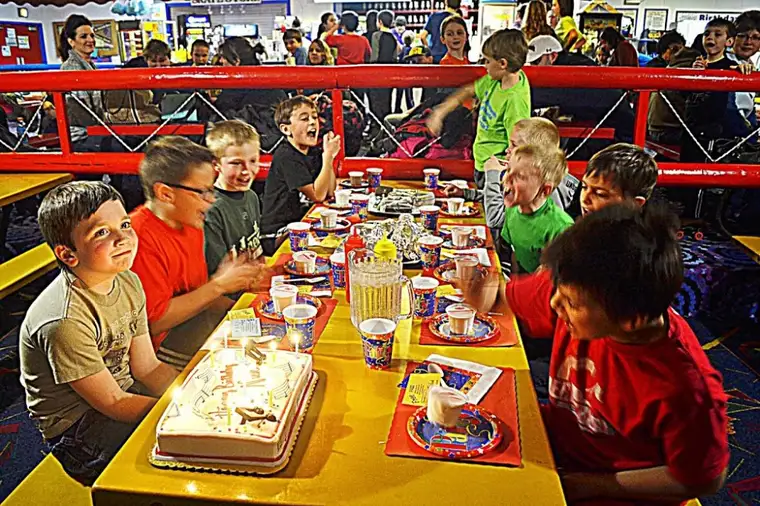
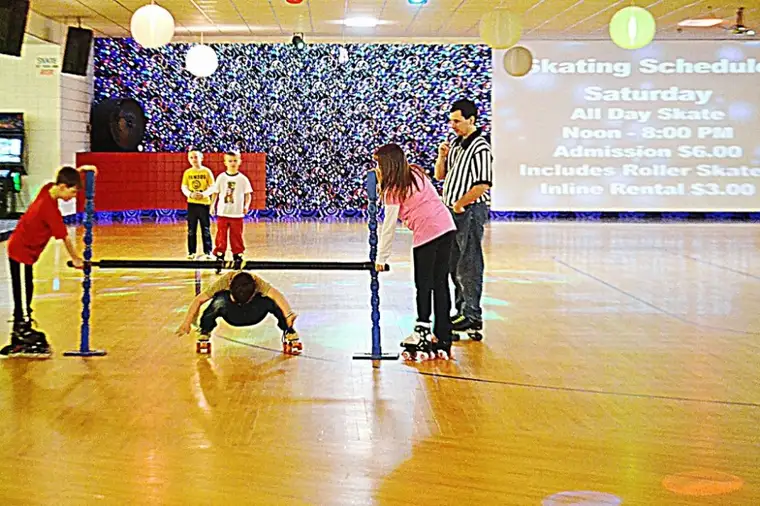

A few weeks ago, when I was still on my blogging fast, our baby turned nine.
{kind=link}
Next year at this time, all our kids will be in double digits. Which means this is our last run with a single-digit dude.
Of all our kids, Nick, I’d definitely say, is the most competitive. On the way to his annual “birthday lunch with the folks,” which would take place at an eatery known for its chicken wings, he told me his friends had dared him to take the Atomic Challenge. This would involve eating the wings with the hottest sauce possible, all in the name of winning a T-shirt declaring he’d met the challenge.
I tried to explain that taking them up on this would probably mean missing his birthday party later. He would be sick at home. Nick grew immediately disappointed that he would not be able to accept the dare. His friends were expecting to see the T-shirt that same afternoon, he said.
In the end, Nick settled on something other than wings. But later that evening, when the limbo contest was offered at Skateland, guess who was the first to raise his hand to give it a whirl?
 |
| Nick’s friends sing a rousing rendition of “Happy Birthday” to him. |
{kind=link}
Keep in mind, Nick was on the old-fashioned roller SKATES as opposed to the more fluid, easy to use roller blades. They are not only more cumbersome but Nick hasn’t been on skates in quite a while.
We saw everything from the older kids who have the angles and agility to the younger ones who are so small it seems they could sneak under a low-lying cobweb. From appearances, Nick seemed to lack what it would take to win.
While I didn’t hold out much hope for Nick hanging on to the end, I had no doubt he’d give it his all.
 |
| With just a few contestants left, Nick sneaks under the line. |
{kind=link}
Imagine how surprised we were when out of the 50 or so kids who attempted this feat, Nick won!
{kind=link}
Well, there were two lines, but he was the clear victor in his line of 25 or so contestants. It was a magical moment, and one his friends were happy to share with him. First came Jack onto the rink with a big old buddy hug.
{kind=link}
And before we knew it, the whole gang had joined Jack for a dog-pile embrace.
{kind=link}
Nick couldn’t have been happier. I’m pretty sure that even though he loved his gifts, his moment of winning limbo, and the hug that followed, will be a memory he’ll keep for a very long time.
And I will as well. Seeing my little fighter beating the odds, shirking the naysayers, feels prophetic. All his life he’s been told he’s the baby, he’s too young, he’s too this or too that. But Nick will have none of it.
I see something amazing in his future, borne from all the times he’s been told he can’t do something. The more the negatives are dished out to him, the more emboldened he becomes. His steely resolve is inspiring to me.
God bless this littlest Salonen heart. Help us help him be all you want him to be, Lord.